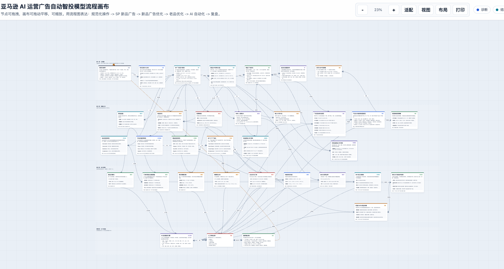

Amazon Ads Optimization OS
把广告诊断、操作动作和复盘发布到一个固定页面
页面以“流程画布 + 执行清单 + 发布方法”组织：先看广告问题在哪里，再决定调结构、调词、调价还是调预算，最后把 Codex 更新后的 HTML 发布到同一个 Cloudflare Pages 地址。
01 · 广告优化板块
从报表到动作的自动化投放流程
每个节点都对应一类判断信号和可执行动作。点击流程节点，右侧会切换成对应的诊断口径。
数据接入
诊断层
优化层
复盘自动化
02 · 执行矩阵
把诊断结果转成运营动作
高花费无订单
看搜索词相关性、Listing 承接、竞价是否过高；优先否掉错配词，精准词先降价观察。
有单但 ACOS 高
保留成交词，按目标 ACOS 回推可承受 CPC；预算从低转化组转移到高确定性词组。
核心词要冲排名
单独建精准广告，限制预算被长尾词消耗；用 7-14 天窗口观察自然位是否上升。
自动广告采词
自动广告负责发现词，手动广告负责承接词；成交词迁移后原自动组加否定精准。
03 · Codex + Cloudflare
让每次生成的 HTML 都更新到固定网址
关键不是每次生成一个新文件，而是每次都部署到同一个 Cloudflare Pages 项目。
让 Codex 生成页面
把 HTML、CSS、JS 放进同一个 `dist` 目录，所有图片也放在 `assets` 里。
打开 Cloudflare 授权
运行登录命令，浏览器会进入 Cloudflare。你完成注册、登录和授权。
发布到固定项目名
项目名固定为 `amazon-ads-ai-optimizer-20260626`，网址就会长期固定。
以后只覆盖更新
改完网页后再次部署到同一个项目名，访问者打开的仍是同一个链接。
首次授权
发布或更新
固定访问地址
04 · 流程参考
参考图的思路：节点可拖拽、画布可扩展、动作可追踪
这个网站先做成可分享页面；后续可以继续升级成真正的拖拽画布，把每个广告动作保存为节点。
